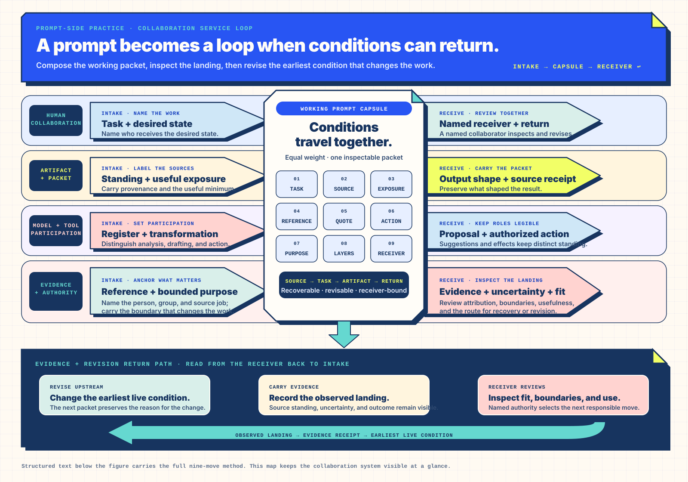

Practice · prompt-side conditions · recoverable collaboration
Prompt-Side Conditions: A Practice Guide for Collaboration Teams
Shape the source, option space, and decision route before generation begins.
A short request can quietly ask a model to infer the educator, audience, evidence, and review route. This guide
helps a team make those collaboration conditions inspectable. Begin with one consequential human reference,
then test-drive the Open Lesson Field as it builds a working prompt capsule. The deeper method follows the lab,
where each choice can be connected to source standing, uncertainty, option space, and a named human receiver.
Quick use
1 · Orient
Resolve one human reference when role, audience, authority, evidence, or personalization can change the work.
2 · Test drive
Use the Open Lesson Field to build a working prompt capsule and watch each classroom, source, register, route, and receiver choice travel with it.
3 · Read back
Inspect what changed, what remained steady, and which human receives the next revision.
Then go deeper
Use the collaboration-system map, desired-state ladder, compact packet, candidate field, and local evidence boundary as reference material.
Test-drive orientation · consequential task position
I. Resolve the human reference when it can change the work
Conversation can remain natural. When a reference could change role, authority, audience, evidence,
ownership, or personalization, give the packet an explicit anchor: the classroom educator, curriculum
lead, receiving team, or another named function. The pronoun itself is ordinary collaboration language;
task position is the condition to inspect.
Look here · speaker role remains open
Speaker-relative request
“Make me a lesson plan for high-school Math students.”
“Me” denotes the speaker, while the speaker’s task role remains unstated: educator, learner, author, approver, or intended receiver. The collaboration still needs that task position; the AI collaborator can ask, and the requester can name which speaker-specific context should shape the artifact.
Surface cue changed · task position still open
Surface cue changed; task position still open
“Make a lesson plan for high-school Math students.”
This version omits “me,” yet it carries no more role, evidence, receiver, or classroom detail. Grade, standard, learning evidence, local context, access needs, and receiving educator remain open. Omitting one surface cue is not referent resolution. Research on prompt underspecification finds that inferred defaults can be fragile across model or prompt changes.[6]
Anchored · inspectable
Task position named
“Draft a Grade 9 statistics lesson plan for an educator teaching 28 students. Align the draft to the named standard, distinguish association from causation, label every data source, and return revision questions to the educator.”
The task position and receiver are explicit. The educator still decides fit, adaptation, and classroom use.
Read these as an orientation comparison. The third packet changes several work-bearing fields. A controlled local test changes one field at a time, holds the model configuration and source packet steady, and records the model’s questions or inferences for a named educator to review.
Test drive · working prompt capsule · seven equal conditions
II. Test-drive the Open Lesson Field and inspect what changes
The Open Lesson Field carries the practice into a Grade 9 statistics-planning situation. An educator can
shape classroom conditions, align a CCSS-M
goal, assign each source a role, anchor consequential references, rotate register, compare lesson routes,
and return one prompt capsule to named reviewers. All prototype computation stays inside the embedded
file, and human reviewers retain curriculum, evidence, and classroom authority.
Work through seven equally weighted conditions in an independently scrolling, self-contained surface.
The Print reviewed handoff control requires the frame’s narrowly scoped print-dialog permission. All
prototype interaction stays local; the parent bibliography carries external destinations, and the
embedded runtime draws from repository-local resources.
Open the complete Open Lesson Field (opens in a new tab)
Class-level coordination
Learner count becomes useful through visible grouping, material, participation, reporting, movement, evidence, and access consequences; the selected grouping route enters the working capsule.
Quantitative field
Invented daily precipitation and daily-mean streamflow values support plotting, time alignment, and association practice.
Context field
Fictional map and land-cover marks can prompt place-based questions; they remain outside the quantitative calculation.
Collaboration context
Named roles, register, disclosed social-proxy position, candidate routes, and evidence boundaries travel with the handoff.
Human authority
The classroom educator, curriculum lead, and data-literate reviewer determine instructional fit, approval, and revision.
Post-lab readback · what changed
Read the collaboration conditions you just moved.
Teaching situation
Learner count and available time changed grouping, materials, participation, and the timing ledger.
Source standing
Quantitative fixtures entered calculation while context layers shaped place-and-scale questions.
Reference and register
Task position, interaction qualities, and disclosed proxy status stayed distinct from evidence and authority.
Human handoff
The selected route became a reviewable working capsule before a named receiver assembled a revision.
Static semantic equivalent · printable route
Seven conditions carry one recoverable lesson handoff.
This table preserves the underlying route: each stage, the visitor’s move, and the working-capsule field that changes.
Table 1 · Open Lesson Field stages and observable prompt-capsule changes
Stage
Visitor move
Observable capsule change
01 · Teaching situation
Set grade band, learner count, available minutes, and a grouping route.
Updates scaffolding, grouping and material counts, participation and reporting structure, movement and access considerations, evidence collection, and a five-part timing ledger; the selected grouping route enters the working capsule while learner identities and records stay with their governing systems.
02 · Standard and goal
Select standards and one mathematical inquiry goal.
Updates objectives, observable learner evidence, review checks, and a route recommendation while preserving the visitor’s route choice; curriculum approval remains with the accountable institution.
03 · Source field
Choose quantitative sources and optional context layers.
Updates axis readiness, paired rows, plot, visible context, and place-and-scale questions while preserving the distinct quantitative and contextual source roles.
04 · Reference and register
Inspect the request, name its human referent, rotate register, and disclose any social proxy.
Updates task-position questions, required handoff modules, and disclosed review questions while keeping evidence, identity, representation, and authority in their own fields.
05 · Investigate
Choose a same-day, one-day-later, or two-days-later alignment and compare the result in a plot and source table.
Updates the streamflow dates, plot, source table, descriptive correlation, and capsule investigation while preserving ten precipitation anchors, ten pairs, and the causal boundary.
06 · Compare routes
Choose among three written, equally available lesson routes; prepare a generated-candidate sampling frame and a separate optional route/event assessment.
Updates the timed method, teacher move, learner move, formative evidence, and access treatment while preserving the goal recommendation. The primary Verbalized Sampling frame asks a separately authorized AI workflow for five generated candidates with probabilities relative to the full response distribution and disclosed residual mass. The optional authored-route frame keeps three conditional event estimates separate. This local field leaves every candidate and probability value open for later generation and human review.
07 · Assemble handoff
Name the human receiver, review the synchronized working capsule, and assemble a revision.
Records a numbered in-memory snapshot with review time, fixture version, included-change receipt, printable capsule, and restore action.
Collaboration-system map · deeper reference
III. Read the collaboration system behind the working capsule
After the test drive, the nine-move field makes the underlying collaboration system visible. When
instructions, sources, tool output, and quoted commands share one context, provenance can blur. These
moves keep task authority, source standing, human reference, sensitivity, intended use, and the human
return route legible as the working capsule forms.

Figure 1 · Read the collaboration system after the test drive: nine equally weighted moves compose the working capsule, then return the result to a named human receiver. The engineering sheet keeps its labels at a working size and scrolls horizontally when space is limited; Table 2 carries the complete text equivalent. Open the field at full size (opens in a new tab).
Table 2 · Nine sanitation moves and the condition each one creates
Move
Positive operating condition
Question for review
Separate instruction and source
The task appears before source material; quoted content retains a narrow analytic role.
Which sentence carries task authority?
Declare provenance and trust
First-party, third-party, retrieved, unverified, adversarially exposed, and synthetic material carry explicit labels.
What standing does each source have?
Reduce sensitive input
Redacted identifiers and the least revealing useful packet preserve the task while limiting exposure.
Which detail actually changes the decision?
Resolve consequential referents
A named person, role, group, or artifact makes task position explicit when a speaker-, addressee-, or group-relative term could change role, authority, audience, evidence, or personalization.
Which task role, audience, authority, or artifact user remains implicit?
Quarantine imperative content
Commands found in documents, comments, code, images, or tool output remain quoted evidence.
Did external content acquire instruction authority?
State the transformation
Analysis, extraction, classification, summarization, drafting, and execution remain distinct operations.
What action is the system authorized to perform?
Constrain untrusted text by purpose
Every source receives one narrow job tied to the live task.
What may this source contribute?
Inspect encoded material
Markup, Unicode variation, images, and nested quotations retain data status until an authorized instruction adopts them.
What content requires inspection before use?
Review output for leakage
The result preserves source attribution, private-data boundaries, and the declared instruction hierarchy.
What did the output reproduce or adopt?
The nine moves are a layered risk-reduction and legibility practice; local security and privacy controls govern the deployed system.
Deeper collaboration conditions · research basis
Carry reference, register, proxy status, and evidence standing as distinct fields.
The opening comparison supplies the test-drive orientation. These deeper distinctions support review when language, role framing, model behavior, or receiving authority can materially change the handoff.
Pronoun anchor
Name the consequential referent
“We approved this” becomes “the steering committee approved this” when approval standing matters. A pronoun can remain when every collaborator can recover the same referent. Pronoun-fidelity and ambiguity studies identify distraction and unresolved reference as conditions worth testing.[3][4]
Register
Set the interaction; keep evidence separate
Specify “calm instructional planning,” “plain-language review,” or another useful register. Register shapes presentation; it neither creates evidence nor confers authority. Preserve the writer’s language variety rather than asking a model to imitate a demographic dialect.[7]
Social proxy
Disclose the stand-in
Ask the system to inspect a draft for questions a named population may raise. Label that pass as a proxy for consideration, distinct from research with or representation by that population.
IV. Name the state the result should create
Desired-state language gives the response an observable destination. Privacy, safety, factual, and authorization
boundaries remain explicit and travel with the replacement state they require. Recent negation-neglect research
concerns what models learn from negated training documents rather than an ordinary prompt-writing rule; it gives
teams a reason to test negation-bearing transformations without treating every negation as a failure.[10]
Rung 1 · boundary without destination
Free-standing prohibition
“Do not make the answer punitive.”
The unwanted concept remains named while the desired register stays undefined.
Rung 2 · stable lexical direction
Lexicalized antonym
“Use a calm, non-punitive register.”
A familiar antonym supplies a more stable direction while the boundary remains visible.
Rung 3 · observable destination
Positive constitutive state
“The answer is calm, revisable, specific, and evidence-bounded.”
Named qualities give reviewers an inspectable target state.
Material boundary · replacement paired
Safety-bearing formulation
“Credentials remain outside the prompt; use the supplied redacted identifier.”
The exclusion retains its material meaning and the task receives a usable representation.
V. Compose the smallest packet that can change the decision
Context is a selected working set. Position, relevance, and signal density matter alongside window size (Liu et al.,
2024 — Lost in the Middle).[11] The packet keeps the task, data, authority, uncertainty, and output form in distinct fields.
prompt_packet:
task: "the transformation, analysis, or question"
object: "the material under examination"
desired_state: "observable qualities the result should have"
evidence_horizon: "sources or facts that may support claims"
uncertainty: "unknown, disputed, or unavailable material"
source_labels: "trusted, untrusted, quoted, or synthetic"
referents: "named roles for consequential I, me, you, we, or they"
register: "interaction qualities; separate from evidence and authority"
social_proxy: "named audience considered; proxy status disclosed"
boundaries: "privacy, authorization, factual, and scope limits"
output_shape: "form, length, technical depth, and audience"
receiver: "human role with standing for the next decision"
VI. Compare the option space before committing
A candidate field keeps multiple plausible routes available before selection. This exercise compares unordered routes
through changed work, assumptions, route-changing observations, and receiving authority. The live lab also keeps two
probability frames legibly separate: its primary Verbalized Sampling prompt asks a separately authorized AI workflow
to generate five distinct responses and assign each a percentage relative to the full response distribution, with
residual or unlisted mass disclosed; an optional second frame asks for an independent conditional event estimate for
each authored route. The local artifact carries the request while leaving candidates and values open, and the receiving
educator reviews the standing and classroom relevance of anything returned.[12]
Focalization — Directing attention toward what can change the named decision while keeping the wider context recoverable.
Here, the educator’s route decision stays in focus while affected learners, alternate candidates, residual probability, and the evidence that could reopen selection remain available for review.
1 · Name the decision
State the outcome, receiving population, time horizon, deployed configuration, and human role with standing to decide.
2 · Enumerate candidates
Ask for three materially distinct routes with changed work, one key assumption, and one observation that would move the team to another route.
3 · Expose the frame
Ask what each route draws on, what remains outside the present view, and which observable evidence would change the comparison.
4 · Preserve the decision
Record the candidate set, selected route, reason for selection, and receiving human authority in the next handoff.
Task: compare three routes for the stated initiative.
Decision condition: a reviewable first increment reaches the receiving team within the stated horizon.
For each route provide:
route name · changed work · key assumption · route-changing observation
evidence being used · material outside the current view · accountable human receiver
Then recommend one conditional route and name the observation that would change it.
The candidate field is a collaboration instrument. Compare it on the team’s recurring work, let human authority govern selection, and preserve the observations that change the route.
VII. Apply it this week
Choose one prompt from the last seven days and run a fifteen-minute collaboration review.
1 · Mark the field
Underline the task, circle source material, name its standing, and identify any embedded command or sensitive detail.
2 · Rewrite the destination
Replace one prohibition-dominant line with the observable state the result should create. Preserve every safety-bearing exclusion beside its replacement.
3 · Resolve one reference
Replace a consequential “I,” “me,” “you,” “we,” or “they” with the intended person, role, group, or artifact. Let conversational pronouns remain where the referent is shared.
4 · Reduce the packet
Keep the object, stable constraints, selected evidence, open alternatives, uncertainty, register, output shape, and receiver. Move residue outside the active context.
5 · Compare before selecting
Ask for three candidates with changed work, one assumption, and one route-changing observation. Compare them before requesting a conditional recommendation.
6 · Write the receipt
Record the chosen route, rejected alternatives that may matter later, human owner, next evidence check, and recovery position.
Follow the evidence; keep the collaboration test local.
The research sources below support bounded claims about referent resolution, perspective, prompt
underspecification, language variety, persona framing, negation, positional attention, and candidate generation.
The field sources explain the public structures mirrored by the Open Lesson Field’s invented teaching
fixture; live-record retrieval and curriculum approval remain separate human-governed steps. External source links
open in a new tab.
Language and collaboration research
Manikantan, Tapaswi, Gandhi, and Toshniwal (2025), IdentifyMe: A Challenging Long-Context Mention Resolution Benchmark for LLMs. ACL Anthology (opens in a new tab).
Gan, Poesio, and Yu (2024), Assessing the Capabilities of Large Language Models in Coreference: An Evaluation. ACL Anthology (opens in a new tab).
Gautam, Bingert, Zhu, Lauscher, and Klakow (2024), Robust Pronoun Fidelity with English LLMs: Are They Reasoning, Repeating, or Just Biased?. ACL Anthology (opens in a new tab).
Yuan, Malaviya, and Yatskar (2023), AmbiCoref: Evaluating Human and Model Sensitivity to Ambiguous Coreference. ACL Anthology (opens in a new tab).
Wang, Li, Yang, Zhang, and Wang (2026), When Truth Is Overridden: Uncovering the Internal Origins of Sycophancy in Large Language Models. AAAI proceedings (opens in a new tab).
Yang, Shi, Ma, Liu, Kaestner, and Wu (2026), What Prompts Don’t Say: Understanding and Managing Underspecification in LLM Prompts. ACL Anthology (opens in a new tab).
Fleisig, Smith, Bossi, Rustagi, Yin, and Klein (2024), Linguistic Bias in ChatGPT: Language Models Reinforce Dialect Discrimination. ACL Anthology (opens in a new tab).
Chen, Arditi, Sleight, Evans, and Lindsey (2025), Persona Vectors: Monitoring and Controlling Character Traits in Language Models. arXiv (opens in a new tab).
Zheng, Pei, Logeswaran, Lee, and Jurgens (2024), When “A Helpful Assistant” Is Not Really Helpful: Personas in System Prompts Do Not Improve Performances of Large Language Models. ACL Anthology (opens in a new tab).
Mayne, McKinney, Dubiński, Karvonen, Chua, and Evans (2026), Negation Neglect: When Models Fail to Learn Negations in Training. arXiv (opens in a new tab).
Liu, Lin, Hewitt, Paranjape, Bevilacqua, Petroni, and Liang (2024), Lost in the Middle: How Language Models Use Long Contexts. ACL Anthology (opens in a new tab).
Zhang, Yu, Chong, Sicilia, Tomz, Manning, and Shi (2025), Verbalized Sampling: How to Mitigate Mode Collapse and Unlock LLM Diversity. arXiv (opens in a new tab).
Open field sources for an educator practice surface
Common Core State Standards Initiative, Mathematics Standards. Standards provide alignment material; an educator determines curriculum and instruction. Official source (opens in a new tab).
National Centers for Environmental Information, Global Historical Climatology Network–Daily, Version 3. The archive provides historical daily temperature, precipitation, snow, and related observations with quality-review and source metadata. Product record (opens in a new tab) · documentation (opens in a new tab).
U.S. Geological Survey, Water Data APIs. Modernized water-data services expose measured conditions and their metadata. Official source (opens in a new tab).
U.S. Department of Agriculture, National Agricultural Statistics Service, Cropland Data Layer. Crop-specific land-cover data includes year- and place-specific metadata and accuracy material. Official source (opens in a new tab).
OpenStreetMap contributors, Copyright and License. Map data carries attribution and Open Database License conditions into downstream artifacts. Official source (opens in a new tab).